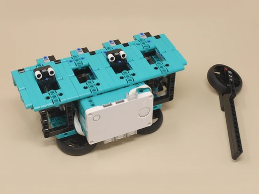

|

|
In this version of the classic Whack-a-Mole game, you try to bop the four moles on the head as they pop up randomly. The game is timed, and your score is the percent of moles that you hit before they pop back down again, which is displayed at the end. The four moles pop up randomly and independently, so every game is different, and often more than one mole pops up at a time, which makes it challenging!
The game is built to be strong, but take it easy, there's no need to hit hard and risk damaging something... In fact, it works better if you pop them quickly and lightly. A hit only counts if you get it before the mole starts going down again on its own, so you might get a lower score then you expect. Bopping them quickly, straight down, and not too hard works best.
|